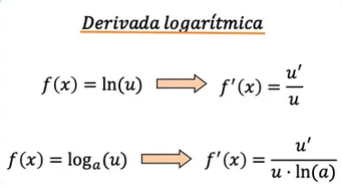

¿Sabías qué?
Derivada de una función logarítmica
La fórmula para dividir una función logarítmica depende de si el logaritmo es natural (de base e) o de cualquier otra base. Por tanto, primero veremos las dos fórmulas por separado con un ejemplo para cada caso y luego haremos un resumen de las dos reglas.
Derivada de un logaritmo natural o neperiano
La derivada de un logaritmo natural (o logaritmo neperiano) es el cociente de la derivada del argumento del logaritmo dividido entre la función del argumento.
Lógicamente, si la función dentro del logaritmo es la función identidad, en el numerador de la derivada queda un 1:
Fíjate en el siguiente ejemplo en el que se resuelve la derivada del logaritmo natural de 3x:
Recuerda que el logaritmo natural es un logaritmo cuya base es el número e (número de Euler).
Derivada de un logaritmo en base a
La derivada de un logaritmo en cualquier base es igual a 1 partido por el producto de x por el logaritmo natural de la base del logaritmo original.
De manera que si aplicamos la regla de la cadena, la regla de la derivada logarítmica queda:
Por ejemplo, la derivada del logaritmo en base 2 de x al cuadrado es:
Fórmula de la derivada de una función logarítmica
Vista la definición de la derivada logarítmica y sus dos posibles variantes, a continuación tienes un resumen de las dos fórmulas para que te sea más fácil memorizarlas.
